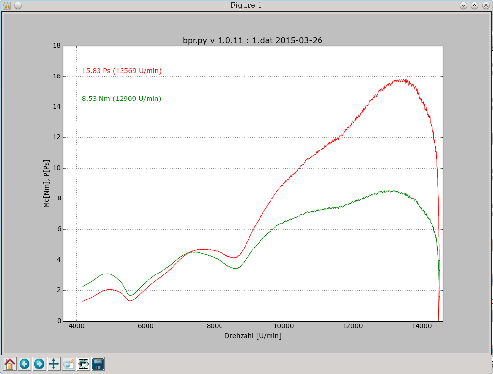

Kurzbeschreibung/Anleitung zum Programm bpr.py
Copyright (c) Werner Joss, 2015
bpr.py ist ein (python-)Programm zum Ermitteln der Leistungskurve (P, Md = f(Drehzahl)) von (Verbrennungs-)Motoren
an einem BeschleunigungPRüfstand.
Hierbei wird mittels einer hochgenauen Zeitverlaufs-Messtechnik der exakte Verlauf des Beschleunigungsvorgangs
einer bekannten Schwungmasse gemessen, aus dem sich danach die o.g. Leistungskurve errechnen lässt.
Konkret wird hierbei das Ausgangssignal eines Magnetgebers auf dem Schwungrad verwendet, dieser erzeugt mittels nachgeschalteter Elektronik beim Passieren jedes Zahns des Schwungrades (=Zahnrad) einen Rechteckimpuls.
Der Zeitpunkt des Eintreffens jedes dieser Impulse wird nun nicht mehr wie bisher mit einer speziellen
PC-Einsteckkarte gemessen, sondern es wird mit dem Standard-Soundrecorderprogramm via MIC-IN der Soundkarte
das analoge Gebersignal (Spannungsverlauf) aufgezeichnet,
genauso wie bei GSF dyno, aus dem die relevanten Zeitpunkte der einzelnen Magnetgeberimpulse berechnet werden koennen.
Dies sind dann auch die Rohdaten fuer die weitere Berechnung, das heisst, es macht Sinn,
aus den Sound(=.wav) Dateien direkt diese Zeitdaten zu berechnen und nur diese zu behalten,
denn sie brauchen sehr viel weniger Speicherplatz (gezipped ~ 10%) als die .wav Dateien.
Das Programm arbeitet also generell mit dem reinen Zeitverlauf der Geberimpulse
(=Beschleunigungs/Bremsvorgang des Schwungrads), die Ergebnisse (P,Md = f(Drehzahl)) werden daraus mithilfe der aktuellen Versuchsparameter (Übersetzung, Gang, Motordaten...) berechnet.
Allgemeine Bedienungshinweise:
Vor jeder Messung müssen die relevanten Parameter (Übersetzungen, gefahrener Gang...) definiert
oder zumindest geprueft werden, dies erfolgt im Menüpunkt 'Edit Setup':
Hier werden Einstellungen zur Skalierung (Autoscale, Ymin, Xmax...) vorgenommen, ebenso wie Parameter die direkten Einfluss auf die berechneten Ergebnisse haben:
Einmal hier eingestellte Parameter bleiben solange erhalten, bis sie geändert werden, darüberhinaus werden diese beim Progragrammende gespeichert und beim nächsten Start automatisch eingelesen (und angezeigt),
sodass sie nicht immer wieder neu eingegeben werden müssen (Sessionmanagement).
Die Einstellungsdatei hierzu heisst bpr.ini, folgt in ihrem Aufbau dem bekannten Standard für .ini Dateien und kann mittels Texteditor (direkt aus dem Menu: Edit ini File) bearbeitet werden.
Zusätzlich können Vorlagen dieser Datei (z.B. für verschiedene Motoren) unter anderem Namen gespeichert und später eingelesen/direkt verwendet werden ('File - Load Ini File').
Die eigentliche Messung wird mittels Menüpunkt 'Start Soundrecorder' aktiviert:
Nach der Messung sollte zunächst der Zeitverlauf der Motordrehzahl berechnet werden,
hier kann man einfach erkennen, ob die voreingestellte Impulszahl zum praktischen Messablauf passt
bzw. ob die Getriebedaten korrekt sind (es empfiehlt sich, ausser dem kompletten Hochlauf bis zum Erreichen der Maximaldrehzahl auch den Auslaufvorgang mitzuerfassen, hieraus kann im Nachgang die Verlustleistung bzw. das Bremsmoment des Prüfstands errechnet werden).
Das folgende Beispiel zeigt eine Messung mit mehreren Hochläufen 'am Stück':
Die Messergebnisse (Leistungskurve) erhält man anschliessend über die Auswahl des Diagrammtyps Drehmoment/Leistung in Setup/Grafik:

Hinweise zu den Einstellungen im Setup:
Alle Einstellungen können sowohl interaktiv im GUI (Edit Setup) oder durch direktes Bearbeiten der Setupdatei
(Edit IniFile) vorgenommen werden.
Die Grafik erlaubt die Ausgabe von 2 verschiedenen Diagrammtypen: Drehzahl und Drehmoment/Leistung.
Das Drehzahldiagramm wird immer automatisch skaliert, beim Drehmoment/Leistungsdiagramm ist die
Voreinstellung 'manuell', hier werden aber beim ersten Aufruf gleich sinnvolle Werte vorgegeben.
Die Parameter im Submenu Analysis:
- Prescale: Vorteiler
- Navg: Anzahl Werte für gleitende Mittelung (=Tiefpassfilter)
beeinflussen die Berechnung der Ergebnisse aus den Rohdaten-
Hier sollte eine optimale Einstellung durch Versuche ermittelt und anschliessend durchweg weiterverwendet werden, um eine direkte Vergleichbarkeit der Messergebnisse sicherzustellen - die Voreinstellung 16/16 hat sich für unseren Prüfstand ganz gut bewährt.
Die Rubrik 'Custom Time Range' dient dazu, nur ein (selbst-)definiertes Zeitfenster einer Messdatei auszuwerten,
z.B. dann wenn diese mehrere Hochläufe 'am Stück' beinhaltet (siehe Beispiel).
Die technischen Daten sowie die Umgebungsbedingungen sind die Grundlage jeder Ergebnisberechnung - daher muss
unbedingt sichergestellt werden, dass diese auch stimmen :)
Achtung: beim Erzeugen einer .dat/.asc Datei aus einer Sounddatei (.wav) werden die aktuellen Werte aus diesen
Rubriken mit in die .dat Datei gespeichert, sodass beim späteren Laden dieser Datei immer die bei der Messung
aktuellen Werte verwendet werden - dabei werden dann allerdings die im Setup voreingestellten Werte überschrieben!
In der Rubrik Sonstiges werden allgemeine Ablaufparamter eingestellt, die in der Regel später kaum noch verändert werden, weiteres hierzu im Folgenden.
Hinweise zum Umgang mit den Messdaten-Dateien sowie deren Auswertung:
Die vom Soundrecorder erzeugten .wav Dateien enthalten aufgrund der hochfrequenten, analogen Abtastung des Gebersignals sehr viel Overhead, wirklich gebraucht werden davon nur die im ersten Schritt daraus berechneten
Zeitpunkte jedes Geberimpulses.
Deswegen ist es empfehlenswert, direkt .dat/.asc Dateien zu erzeugen (Flag Create Diadem Files) und diese ggf. gleich noch zu kompiemieren (compress Data), wodurch der benötigte Speicherplatz auf ca. 10% reduziert wird.
Desweiteren werden bei dieser Vorgehensweise wie zuvor beschrieben, die relevanten Parameter (Übersetzungen,
Trägheitsmomente, Temperatur..) gleich zusammen mit den Messdaten gespeichert, wodurch spätere Unsicherheiten bzw. Fehler bei der Auswertung vermieden werden.
Ein .dat/.asc Messdatensatz besteht immer aus 2 zusammengehörenden Dateien:
- sog. Headerdaten - testXYZ.dat
- die eigentlichen Messdaten - testXYZ.asc
entsprechend der Konventionen für das DIADEM Messdaten-Format - siehe Datei dmheader.pdf.
Deswegen unbedingt beachten:
- Dateien immer nur zusammen kopieren/weitergeben
- Dateien nicht nachträglich umbenennen (falls doch: auch Eintrag/Verweis auf .asc in .dat Datei ändern!)
- beide Dateien (.dat/.asc) sind reine Textdateien und können daher mit jedem Texteditor geöffnet (bearbeitet - s.o.) werden
Hinweise zur Installation:
Das Programm kann auch als reines Auswertprogramm auf PC's ohne Soundkarte installiert werden. Hierzu sind folgende Voraussetzungen notwendig:
- python 2.7 oder neuer.
- Diverse python Zusatzmoule: sys, os, time, datetime, math, wave, struct, platform, shutil, zipfile, zlib (Standard)
- sowie: matplotlib, PyQt4, iniparse (Nonstandard).
- Optional: (W)gnuplot.
Das Programmpaket beinhaltet die compilierten python Dateien sowie einige Beispieldaten, es wurde unter Linux entwickelt (hier werden die Nonstandard-Zusatzmodule einfach mit dem Paketmanager installiert) und auch unter Windows (XP) getestet (wo sich die Installation der notwendigen python-Module nicht
ganz so einfach gestaltet - siehe die mitgelieferte Datei bprpy_wininst.txt).
Rechtlicher Hinweis - Copyright (c) 2015, Werner Joss:
Dieses Programm wurde erstellt und ist Eigentum von
Werner Joss
Robert-Kochstr.2
76351 Linkenheim
und darf von Privatpersonen kostenfrei verwendet werden, nicht jedoch fuer kommerzielle Zwecke
(in diesem Fall ist vorher der Autor zu kontaktieren).